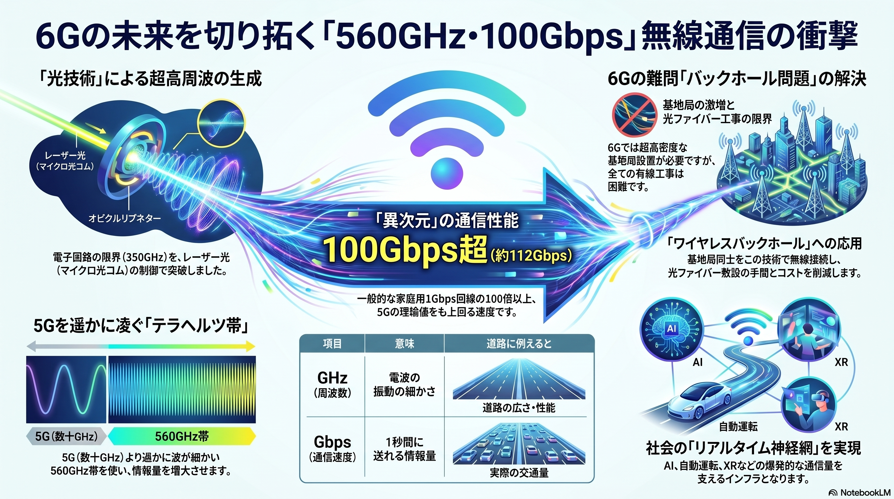

インフォグラフィックス解説
本図解は、徳島大学と岐阜大学の研究グループが達成した次世代無線通信の実証実験における核心的なメカニズムと、その社会的役割を1枚に凝縮したものです。従来の通信の限界を打ち破る革新性が、視覚的に整理されています。
テラヘルツ波領域に達する超高周波（560GHz）を制御することで、無線環境でありながら実測値約112Gbpsという驚異的な高速通信を記録しました。これは一般的な固定光回線の100倍以上の速度を空中経由で実現したことを意味します。
従来の電子回路による高周波生成方式では、ノイズや熱の制約により350GHz付近が物理的な限界点とされていました。本技術では、レーザーを精密制御する光技術「マイクロ光コム」を基準に用いることで、極めて安定した超高周波信号の生成に成功しました。
直進性が強く飛ばない超高周波を扱う6Gでは、街中に小型基地局を激増させる必要があります。すべての設置点に光ファイバーを引く土木工事コスト（バックホール問題）を、この100Gbps級の超高速無線リンクによって代替・解消する道を開きます。
光ファイバーの持つ絶対的な「安定性」と、無線が持つ「柔軟性・機動性」を高度に融合。基幹ネットワークは有線で守り、アクセスの高密度な末端区間（ラストワンマイル）をこのテラヘルツ無線で繋ぐ、次世代の通信インフラの屋台骨となります。